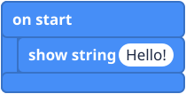
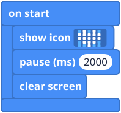
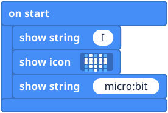

What it is
The micro:bit has only 25 lights, so a whole word will not fit. The letters scroll past one at a time, like the news ticker at the bottom of a TV screen. In code, text is called a string: think of letters threaded on a piece of string, like beads. Numbers scroll across too.
The blocks
All four are in the Basic group. If you cannot see clear screen, click "... more" at the bottom of the group.
Mini examples



Try this
- Show your name.
- Show a whole sentence. How long does it take to scroll?
- Show a heart for 1 second, then your name, then clear the screen.
- Harder: count "3", "2", "1" using show number and pause.
Common mistakes
- Nothing happens. The block is lying loose on the workspace. Click it into on start.
- The words come in the wrong order. Blocks run from top to bottom. Drag them to swap places.
- It shows 0. The number box still says 0. Click it and type your number.
- I missed the text. Press the reset button on the back to run the program again.
The code in words
JavaScript: basic.showString("Hello!")
basic.showNumber(42)
basic.pause(1000)
basic.clearScreen()
Python: basic.show_string("Hello!")
basic.show_number(42)
basic.pause(1000)
basic.clear_screen()
V1 and V2
These blocks work the same on both.
Teacher notes
- Time: 20 to 30 minutes.
- Ideas covered: running blocks in order, text (strings) and numbers, and milliseconds.
- Looking ahead: a string like "5" and the number 5 look the same on the lights, but they are different kinds of value. This matters when variables arrive.
- The block pictures are simplified drawings. Check the real blocks in MakeCode.